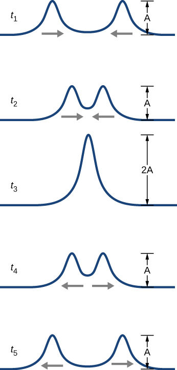
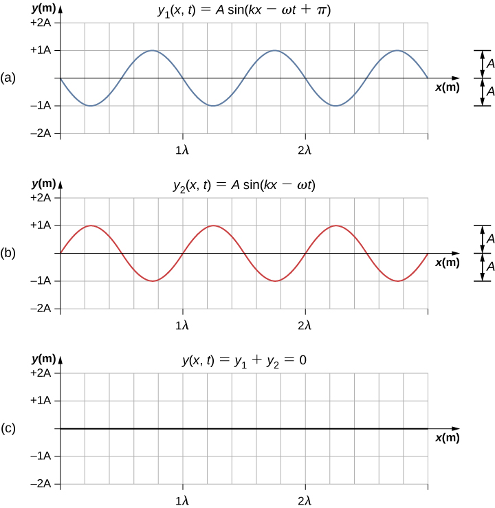
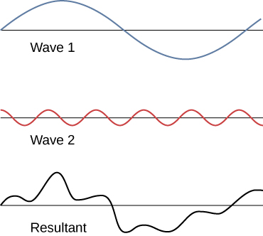
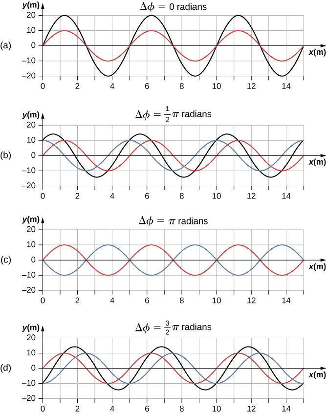
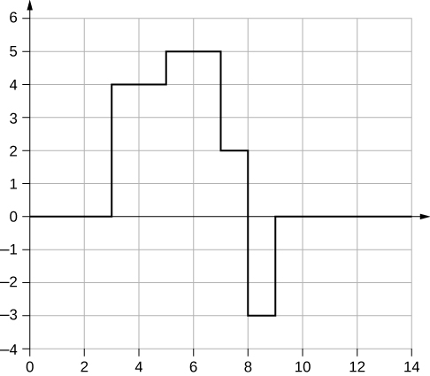
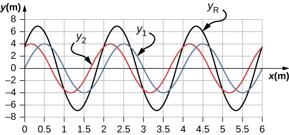

Explain how mechanical waves are reflected and transmitted at the boundaries of a medium
Define the terms interference and superposition
Find the resultant wave of two identical sinusoidal waves that differ only by a phase shift
Up to now, we have been studying mechanical waves that propagate continuously through a medium, but we have not discussed what happens when waves encounter the boundary of the medium or what happens when a wave encounters another wave propagating through the same medium. Waves do interact with boundaries of the medium, and all or part of the wave can be reflected. For example, when you stand some distance from a rigid cliff face and yell, you can hear the sound waves reflect off the rigid surface as an echo. Waves can also interact with other waves propagating in the same medium. If you throw two rocks into a pond some distance from one another, the circular ripples that result from the two stones seem to pass through one another as they propagate out from where the stones entered the water. This phenomenon is known as interference. In this section, we examine what happens to waves encountering a boundary of a medium or another wave propagating in the same medium. We will see that their behavior is quite different from the behavior of particles and rigid bodies. Later, when we study modern physics, we will see that only at the scale of atoms do we see similarities in the properties of waves and particles.
Reflection and Transmission
When a wave propagates through a medium, it reflects when it encounters the boundary of the medium. The wave before hitting the boundary is known as the incident wave. The wave after encountering the boundary is known as the reflected wave. How the wave is reflected at the boundary of the medium depends on the boundary conditions; waves will react differently if the boundary of the medium is fixed in place or free to move ([link]). A fixed boundary condition exists when the medium at a boundary is fixed in place so it cannot move. A free boundary condition exists when the medium at the boundary is free to move.
(a) One end of a string is fixed so that it cannot move. A wave propagating on the string, encountering this fixed boundary condition, is reflected out of phase with respect to the incident wave. (b) One end of a string is tied to a solid ring of negligible mass on a frictionless lab pole, where the ring is free to move. A wave propagating on the string, encountering this free boundary condition, is reflected in phase with respect to the wave.
Part (a) of the [link] shows a fixed boundary condition. Here, one end of the string is fixed to a wall so the end of the string is fixed in place and the medium (the string) at the boundary cannot move. When the wave is reflected, the amplitude of the reflected way is exactly the same as the amplitude of the incident wave, but the reflected wave is reflected out of phase with respect to the incident wave. The phase change can be explained using Newton’s third law: Recall that Newton’s third law states that when object A exerts a force on object B, then object B exerts an equal and opposite force on object A. As the incident wave encounters the wall, the string exerts an upward force on the wall and the wall reacts by exerting an equal and opposite force on the string. The reflection at a fixed boundary is inverted. Note that the figure shows a crest of the incident wave reflected as a trough. If the incident wave were a trough, the reflected wave would be a crest.
Part (b) of the figure shows a free boundary condition. Here, one end of the string is tied to a solid ring of negligible mass on a frictionless pole, so the end of the string is free to move up and down. As the incident wave encounters the boundary of the medium, it is also reflected. In the case of a free boundary condition, the reflected wave is in phase with respect to the incident wave. In this case, the wave encounters the free boundary applying an upward force on the ring, accelerating the ring up. The ring travels up to the maximum height equal to the amplitude of the wave and then accelerates down towards the equilibrium position due to the tension in the string. The figure shows the crest of an incident wave being reflected in phase with respect to the incident wave as a crest. If the incident wave were a trough, the reflected wave would also be a trough. The amplitude of the reflected wave would be equal to the amplitude of the incident wave.
In some situations, the boundary of the medium is neither fixed nor free. Consider [link](a), where a low-linear mass density string is attached to a string of a higher linear mass density. In this case, the reflected wave is out of phase with respect to the incident wave. There is also a transmitted wave that is in phase with respect to the incident wave. Both the transmitted and the reflected waves have amplitudes less than the amplitude of the incident wave. If the tension is the same in both strings, the wave speed is higher in the string with the lower linear mass density.
Waves traveling along two types of strings: a thick string with a high linear density and a thin string with a low linear density. Both strings are under the same tension, so a wave moves faster on the low-density string than on the high-density string. (a) A wave moving from a low-density to a high-density medium results in a reflected wave that is out of phase with respect to the incident pulse (or wave) and a transmitted wave that is in phase with the incident wave. (b) When a wave moves from a high-density medium to a low-density medium, both the reflected and transmitted wave are in phase with respect to the incident wave.
Part (b) of the figure shows a high-linear mass density string is attached to a string of a lower linear density. In this case, the reflected wave is in phase with respect to the incident wave. There is also a transmitted wave that is in phase with respect to the incident wave. Both the incident and the reflected waves have amplitudes less than the amplitude of the incident wave. Here you may notice that if the tension is the same in both strings, the wave speed is higher in the string with the lower linear mass density.
Superposition and Interference
Most waves do not look very simple. Complex waves are more interesting, even beautiful, but they look formidable. Most interesting mechanical waves consist of a combination of two or more traveling waves propagating in the same medium. The principle of superposition can be used to analyze the combination of waves.
Consider two simple pulses of the same amplitude moving toward one another in the same medium, as shown in [link]. Eventually, the waves overlap, producing a wave that has twice the amplitude, and then continue on unaffected by the encounter. The pulses are said to interfere, and this phenomenon is known as interference.
Two pulses moving toward one another experience interference. The term interference refers to what happens when two waves overlap.

To analyze the interference of two or more waves, we use the principle of superposition. For mechanical waves, the principle of superposition states that if two or more traveling waves combine at the same point, the resulting position of the mass element of the medium, at that point, is the algebraic sum of the position due to the individual waves. This property is exhibited by many waves observed, such as waves on a string, sound waves, and surface water waves. Electromagnetic waves also obey the superposition principle, but the electric and magnetic fields of the combined wave are added instead of the displacement of the medium. Waves that obey the superposition principle are linear waves; waves that do not obey the superposition principle are said to be nonlinear waves. In this chapter, we deal with linear waves, in particular, sinusoidal waves.
The superposition principle can be understood by considering the linear wave equation. In Mathematics of a Wave, we defined a linear wave as a wave whose mathematical representation obeys the linear wave equation. For a transverse wave on a string with an elastic restoring force, the linear wave equation is
Any wave function where the argument of the function is linear is a solution to the linear wave equation and is a linear wave function. If wave functions and are solutions to the linear wave equation, the sum of the two functions is also a solution to the linear wave equation. Mechanical waves that obey superposition are normally restricted to waves with amplitudes that are small with respect to their wavelengths. If the amplitude is too large, the medium is distorted past the region where the restoring force of the medium is linear.
Waves can interfere constructively or destructively. [link] shows two identical sinusoidal waves that arrive at the same point exactly in phase. [link](a) and (b) show the two individual waves, [link](c) shows the resultant wave that results from the algebraic sum of the two linear waves. The crests of the two waves are precisely aligned, as are the troughs. This superposition produces constructive interference. Because the disturbances add, constructive interference produces a wave that has twice the amplitude of the individual waves, but has the same wavelength.
[link] shows two identical waves that arrive exactly out of phase, producing destructive interference. [link](a) and (b) show the individual waves, and [link](c) shows the superposition of the two waves. Because the troughs of one wave add the crest of the other wave, the resulting amplitude is zero for destructive interference—the waves completely cancel.
Constructive interference of two identical waves produces a wave with twice the amplitude, but the same wavelength.Destructive interference of two identical waves, one with a phase shift of , produces zero amplitude, or complete cancellation.

When linear waves interfere, the resultant wave is just the algebraic sum of the individual waves as stated in the principle of superposition. [link] shows two waves (red and blue) and the resultant wave (black). The resultant wave is the algebraic sum of the two individual waves.
When two linear waves in the same medium interfere, the height of resulting wave is the sum of the heights of the individual waves, taken point by point. This plot shows two waves (red and blue) added together, along with the resulting wave (black). These graphs represent the height of the wave at each point. The waves may be any linear wave, including ripples on a pond, disturbances on a string, sound, or electromagnetic waves.
The superposition of most waves produces a combination of constructive and destructive interference, and can vary from place to place and time to time. Sound from a stereo, for example, can be loud in one spot and quiet in another. Varying loudness means the sound waves add partially constructively and partially destructively at different locations. A stereo has at least two speakers creating sound waves, and waves can reflect from walls. All these waves interfere, and the resulting wave is the superposition of the waves.
We have shown several examples of the superposition of waves that are similar. [link] illustrates an example of the superposition of two dissimilar waves. Here again, the disturbances add, producing a resultant wave.
Superposition of nonidentical waves exhibits both constructive and destructive interference.

At times, when two or more mechanical waves interfere, the pattern produced by the resulting wave can be rich in complexity, some without any readily discernable patterns. For example, plotting the sound wave of your favorite music can look quite complex and is the superposition of the individual sound waves from many instruments; it is the complexity that makes the music interesting and worth listening to. At other times, waves can interfere and produce interesting phenomena, which are complex in their appearance and yet beautiful in simplicity of the physical principle of superposition, which formed the resulting wave. One example is the phenomenon known as standing waves, produced by two identical waves moving in different directions. We will look more closely at this phenomenon in the next section.
Try this simulation to make waves with a dripping faucet, audio speaker, or laser! Add a second source or a pair of slits to create an interference pattern. You can observe one source or two sources. Using two sources, you can observe the interference patterns that result from varying the frequencies and the amplitudes of the sources.
Superposition of Sinusoidal Waves that Differ by a Phase Shift
Many examples in physics consist of two sinusoidal waves that are identical in amplitude, wave number, and angular frequency, but differ by a phase shift:
When these two waves exist in the same medium, the resultant wave resulting from the superposition of the two individual waves is the sum of the two individual waves:
The resultant wave can be better understood by using the trigonometric identity:
where and . The resulting wave becomes
This equation is usually written as
The resultant wave has the same wave number and angular frequency, an amplitude of and a phase shift equal to half the original phase shift. Examples of waves that differ only in a phase shift are shown in [link]. The red and blue waves each have the same amplitude, wave number, and angular frequency, and differ only in a phase shift. They therefore have the same period, wavelength, and frequency. The green wave is the result of the superposition of the two waves. When the two waves have a phase difference of zero, the waves are in phase, and the resultant wave has the same wave number and angular frequency, and an amplitude equal to twice the individual amplitudes (part (a)). This is constructive interference. If the phase difference is the waves interfere in destructive interference (part (c)). The resultant wave has an amplitude of zero. Any other phase difference results in a wave with the same wave number and angular frequency as the two incident waves but with a phase shift of and an amplitude equal to Examples are shown in parts (b) and (d).
Superposition of two waves with identical amplitudes, wavelengths, and frequency, but that differ in a phase shift. The red wave is defined by the wave function and the blue wave is defined by the wave function . The black line shows the result of adding the two waves. The phase difference between the two waves are (a) (b) (c) and (d) .

Summary
Superposition is the combination of two waves at the same location.
Constructive interference occurs from the superposition of two identical waves that are in phase.
Destructive interference occurs from the superposition of two identical waves that are out of phase.
The wave that results from the superposition of two sine waves that differ only by a phase shift is a wave with an amplitude that depends on the value of the phase difference.
Conceptual Questions
An incident sinusoidal wave is sent along a string that is fixed to the wall with a wave speed of v. The wave reflects off the end of the string. Describe the reflected wave.
A string of a length of 2.00 m with a linear mass density of is attached to the end of a 2.00-m-long string with a linear mass density of The free end of the higher-density string is fixed to the wall, and a student holds the free end of the low-density string, keeping the tension constant in both strings. The student sends a pulse down the string. Describe what happens at the interface between the two strings.
At the interface, the incident pulse produces a reflected pulse and a transmitted pulse. The reflected pulse would be out of phase with respect to the incident pulse, and would move at the same propagation speed as the incident pulse, but would move in the opposite direction. The transmitted pulse would travel in the same direction as the incident pulse, but at half the speed. The transmitted pulse would be in phase with the incident pulse. Both the reflected pulse and the transmitted pulse would have amplitudes less than the amplitude of the incident pulse.
A long, tight spring is held by two students, one student holding each end. Each student gives the end a flip sending one wavelength of a sinusoidal wave down the spring in opposite directions. When the waves meet in the middle, what does the wave look like?
Many of the topics discussed in this chapter are useful beyond the topics of mechanical waves. It is hard to conceive of a mechanical wave with sharp corners, but you could encounter such a wave form in your digital electronics class, as shown below. This could be a signal from a device known as an analog to digital converter, in which a continuous voltage signal is converted into a discrete signal or a digital recording of sound. What is the result of the superposition of the two signals?

A string of a constant linear mass density is held taut by two students, each holding one end. The tension in the string is constant. The students each send waves down the string by wiggling the string. (a) Is it possible for the waves to have different wave speeds? (b) Is it possible for the waves to have different frequencies? (c) Is it possible for the waves to have different wavelengths?
Problems
Consider two sinusoidal waves traveling along a string, modeled as and What is the height of the resultant wave formed by the interference of the two waves at the position at time
Consider two sinusoidal sine waves traveling along a string, modeled as and What is the height of the resultant wave formed by the interference of the two waves at the position at time
Consider two sinusoidal sine waves traveling along a string, modeled as and What is the wave function of the resulting wave? [Hint: Use the trig identity
Two sinusoidal waves are moving through a medium in the same direction, both having amplitudes of 3.00 cm, a wavelength of 5.20 m, and a period of 6.52 s, but one has a phase shift of an angle . What is the phase shift if the resultant wave has an amplitude of 5.00 cm? [Hint: Use the trig identity
Two sinusoidal waves are moving through a medium in the positive x-direction, both having amplitudes of 6.00 cm, a wavelength of 4.3 m, and a period of 6.00 s, but one has a phase shift of an angle What is the height of the resultant wave at a time and a position ?
Two sinusoidal waves are moving through a medium in the positive x-direction, both having amplitudes of 7.00 cm, a wave number of an angular frequency of and a period of 6.00 s, but one has a phase shift of an angle What is the height of the resultant wave at a time and a position
Consider two waves and that are identical except for a phase shift propagating in the same medium. (a)What is the phase shift, in radians, if the amplitude of the resulting wave is 1.75 times the amplitude of the individual waves? (b) What is the phase shift in degrees? (c) What is the phase shift as a percentage of the individual wavelength?
Two sinusoidal waves, which are identical except for a phase shift, travel along in the same direction. The wave equation of the resultant wave is What are the angular frequency, wave number, amplitude, and phase shift of the individual waves?
Two sinusoidal waves, which are identical except for a phase shift, travel along in the same direction. The wave equation of the resultant wave is What are the period, wavelength, amplitude, and phase shift of the individual waves?
Consider two wave functions, and (a) Using a spreadsheet, plot the two wave functions and the wave that results from the superposition of the two wave functions as a function of position for the time (b) What are the wavelength and amplitude of the two original waves? (c) What are the wavelength and amplitude of the resulting wave?
a.

;
b. ; c.
Consider two wave functions, and (a) Verify that is the solution for the wave that results from a superposition of the two waves. Make a column for x, , , , and Plot four waves as a function of position where the range of x is from 0 to 12 m.
Consider two wave functions that differ only by a phase shift, and Use the trigonometric identities and to find a wave equation for the wave resulting from the superposition of the two waves. Does the resulting wave function come as a surprise to you?
The result is not surprising because
Glossary
constructive interference
when two waves arrive at the same point exactly in phase; that is, the crests of the two waves are precisely aligned, as are the troughs
destructive interference
when two identical waves arrive at the same point exactly out of phase; that is, precisely aligned crest to trough
fixed boundary condition
when the medium at a boundary is fixed in place so it cannot move
free boundary condition
exists when the medium at the boundary is free to move
interference
overlap of two or more waves at the same point and time
superposition
phenomenon that occurs when two or more waves arrive at the same point
![Figure a shows two figures of a string attached to a rigid support at the right. The top string is labeled before reflection. A pulse formed at the top of the string propagates towards the right with velocity v subscript i. The bottom string is labeled after reflection. A pulse formed at the bottom of the string propagates towards the left with velocity v subscript R. Figure b shows two figures of a string attached to a ring that is passed through a pole on the right. The top string is labeled before reflection. A pulse formed at the top of the string propagates towards the right with velocity v subscript i. The bottom string is labeled after reflection. A pulse formed at the top of the string propagates towards the left with velocity v subscript R.](CNX_UPhysics_16_05_HardSoft.jpg)
![Figure a shows two strings, the top one labeled before reflection and the bottom one labeled after reflection. The top string has a pulse labeled incident wave, which propagates to the right with velocity v subscript i. The bottom string has two pulses. The one on the left is labeled transmitted wave. This propagates to the right with velocity v subscript T. The wave on the left is labeled reflected wave. It moves to the left with velocity v subscript R. It has a smaller amplitude from the incident wave and is upside down. Figure b shows two strings, the top one labeled before reflection and the bottom one labeled after reflection. The top string has a pulse labeled incident wave, which propagates to the right with velocity v subscript i. The bottom string has two pulses. The one on the left is labeled transmitted wave and the one on the right is labeled reflected wave. Both are formed at the top of the string.](CNX_UPhysics_16_05_HardSoft2.jpg)
![Figures a and b each show a wave with amplitude A and wavelength lambda. They are in phase with one another. Figure a is labeled y1 parentheses x, t parentheses equal to A sine parentheses kx minus omega t parentheses. Figure b is labeled y2 parentheses x, t parentheses equal to A sine parentheses kx minus omega t parentheses. Figure c shows a wave that is in phase with the other two. It has amplitude 2A and wavelength lambda. It is labeled y parentheses x, t parentheses equal to y1 plus y2 equal to 2A sine parentheses kx minus omega t parentheses.](CNX_UPhysics_16_05_Construct.jpg)
![Figure shows three waves. Two of these, blue and red have y values varying from -10 to plus 10 and the same wavelength. They are slightly out of phase. The third, which is black, has the same wavelength but a larger amplitude. Another figure shows a blown up portion of this graph. At x approximately equal to 0.74, the y values of the red and blue waves are y1 = 8 and y2 = 10 respectively. The y value of the black wave is y1 + y2 = 18. At x equal to 1, the y values of the red and blue waves are both 9.5. The y value of the black wave is y1 + y2 = 19.](CNX_UPhysics_16_05_superimpos.jpg)
![Figure a shows the graph of a red wave with sharp corners. The y value is 0 at x=0. At x=3, the y value rises to 2 and stays constant till x=5. Here, it rises to 3 and stays constant till x=8. Here, it dips down to -2 and stays constant till x=9. Here it rises to 0 and stays constant. Figure b shows the graph of a blue wave with sharp corners. The y value is 0 at x=0. At x=3, the y value rises to 2 and stays constant till x=7. Here it dips to -1 and stays constant till x=9. Here it rises to 0 and stays constant.](CNX_UPhysics_16_05_conc4_img.jpg)